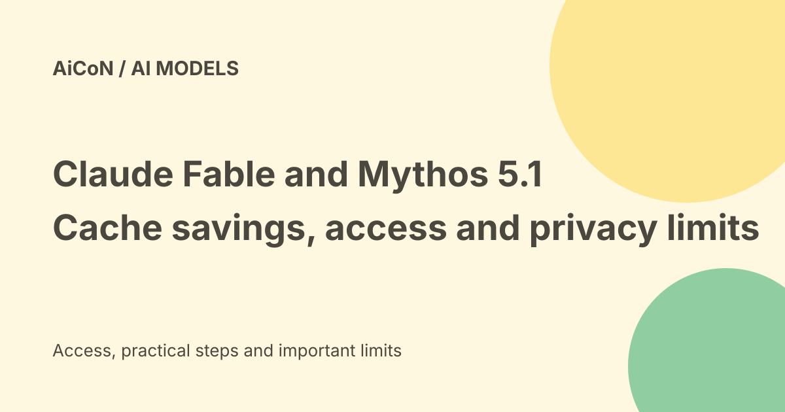

Claude Fable and Mythos 5.1: pricing, cache savings and access limits
Anthropic introduced Claude Fable 5.1 and Mythos 5.1 as the same underlying model with different safeguards. Fable is generally available; Mythos is limited to trusted-access programmes. The advertised savings come mainly from cheaper cached inputs, not a blanket cut to every token or subscription.

What is different between them?
The official announcement describes one underlying model with different safeguard levels. Fable is the broader coding and knowledge-work offering. Mythos access is restricted for specific professional work in cybersecurity and life sciences.
That is not an invitation to bypass access controls. Use the approved model and programme terms for your work.
General availability is not free access
Generally available means the product has a broader access route. It does not prove that every free Claude account has unlimited use or that an API request is free.
Inspect the actual model selection and limits in your plan. This guide did not create an account, buy credits or run a model.
Current API rates
The checked official pricing table lists Fable 5.1 and limited-availability Mythos 5.1 at ten dollars per million base input tokens and fifty dollars per million output tokens.
It lists five-minute cache writes at 12.50 dollars and one-hour writes at twenty dollars per million tokens. Cache hits and refreshes cost 0.25 dollars per million tokens for these models.
What is a token?
A token is a unit the model uses to process text and other content. It is not exactly one word. Input is what you provide; output is what the model generates.
A request can include repeated context, generated text and tool-related work. Estimate the actual usage pattern rather than multiplying the price by the number of visible chat messages.
Why the savings vary
Fable 5's listed cache-read price was one dollar per million tokens; Fable 5.1's is 0.25 dollars. That is a seventy-five-percent reduction for that billing category.
Anthropic estimates about twenty-five-percent lower cost for typical token-billed workloads and up to roughly forty-five percent for highly agentic work. Those are workload estimates, not a reduction of every bill by the same amount.
Cache writes still cost money
A cache stores context so later requests can reuse it. The write is charged when content is first stored; a cheaper read applies when the cache is actually hit within its validity period.
Short one-off prompts may receive little benefit. Long-running work with repeated context can benefit more. Measure cache-hit use and total output before claiming a saving.
Batch and other billing routes
The official table lists separate batch rates, including five dollars per million input tokens and twenty-five dollars per million output tokens for these models.
Batch processing and ordinary interactive use are different routes. Provider platforms, tools and other options can change total cost. Confirm the applicable table for the exact service you choose.
India cost verdict
These are US-dollar API rates, not an Indian subscription or checkout total. Taxes, foreign-exchange fees and the product plan can affect the bill.
No universal free allowance or India-specific price was established in the announcement. Existing account access and country support should be checked separately from model availability.
Enterprise Frontier Safeguards
Anthropic describes EFS as a system using customer-controlled cloud infrastructure for data, with human review by the customer by default. It says the enterprise rollout begins in phases later in the fall.
The announcement's privacy framing should not be assumed to apply to every consumer chat or current account. Eligible customers can use a zero-data-retention route while awaiting EFS, subject to actual eligibility and contract terms.
Safeguard claims are not reliability guarantees
The company reports fewer false positives for benign requests and stronger model performance. Those are vendor evaluations, not a promise that outputs are always correct or that malicious content cannot influence an agent.
The same announcement notes limitations in its evaluation coverage and occasional approval bypasses in testing. Keep permissions, independent review and normal security controls around consequential work.
A careful evaluation
- Confirm the model and access route.
- Use a small, non-sensitive test task.
- Record input, output and cache billing.
- Compare quality with your current model on the same task.
- Review generated code, facts and calculations.
- Check the actual data-retention terms.
- Set usage budgets before long agent runs.
Do not treat a benchmark or enterprise roadmap as permission to upload confidential files.
What changed since the original post?
We add the exact checked API categories and show why cheaper cache reads do not mean every token is twenty-five percent cheaper. EFS remains a phased enterprise feature, and Mythos remains restricted.
Frequently asked questions
Are input and output prices both reduced?
The highlighted change is the cache-read category.
Can anyone use Mythos?
The announcement limits it to trusted-access programmes.
Does EFS cover my ordinary chat today?
Do not assume that. Check the specific account and terms.
Sources: Official model announcement and limits · Current official token and cache pricing. Checked 7 October 2026.